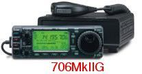
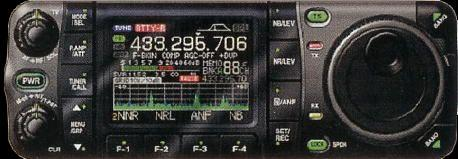
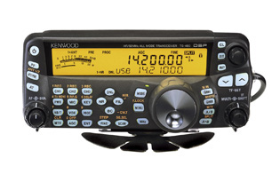

In all fairness, cost is relative. What you and I think is expensive, may be pocket change for some folks. I won't use his name, but I know one amateur who has spent nearly $25,000 on his mobile installation, and this didn't include the vehicle he bought to hold it all. There are two HF transceivers (radios), three VHF/UHF ones, one SHF (1.296 GHz), and eight antennas. Every one of the radios (except the SHF one), have power amplifiers attached to them. The right front seat has been removed to allow room for all of the gear. There are four AGM batteries, a plethora of ancillary gear (wattmeters, etc.), and a second, 250 amp alternator to power the mess. Obsessive? You bet!
The other end of the scale can be equally impressive for the lack of funds spent. I know one amateur living near Phoenix, who is the epitome of a skin flint. His mobile radio is a near ancient FT101b he bought used for $120, and his antenna was salvaged from a dumpster at a hamfest.
The truth is, most fall in the $800 to $2,200 range (low power), and up towards $4,000 for high power installations. Incidentally, we're speaking of a dedicated installation, not one with a shared (base operation) radio.

Lower end relates to purchasing a used radio, as the least expensive new one is more than $800 with applicable taxes and/or shipping. Icom IC-706MkIIgs and Yaesu FT857s sell used for about $500, and Alinco DX70s for about $400. Certainly people ask more for them, so it pays to shop around.Here's some good advice about shopping for a used radio. First, don't buy any used radio from anyone unless you can play with the radio first hand. This pretty much eliminates e-bay. Retailers, like AES and HRO (et. al.), stand behind their used gear, and are for the most part a safe bet if you're familiar with the radio to start with. If you're not familiar, you should take a trip to your nearest dealer and play with the offerings first hand.
The key things to look for should be obvious, but if they're not, here's a few suggestions. Remote kits are becoming a necessity as vehicles get smaller, and standard accessories become more plentiful. If it doesn't have one, replete with all the necessary brackets, look elsewhere. Make sure the supplied microphone is OEM for that specific radio. Why? Unfortunately, far too many unknowing amateurs modify their radios in bazaar ways, and they usually start with the microphone. Speaking of modifications, if there are any (out of band transmit included), pass up the bargain because chances are it isn't a bargain. Make sure it has a manual. Programming is tough enough on most miniaturized radios, and nearly impossible without the manual. Even then, Nifty Accessories may become your best friend.
Lower end antennas are usually less efficient than moderately priced ones. For example, you can buy a complete set of hamstick-like antennas covering 80 through 10 meters for about $125, perhaps a little less for the short dummy-load-like ones. Just remember, they're minimal in performance no matter how you mount them. If you haven't already, here are two articles to read: Amplifiers, Commercial and Antenna Mounts.
If you scrape the bottom of the barrel a little, you can garner a mount, coax, and a few other necessities for under $50. While a lower end installation may not be the hottest thing on the band, one thing is for sure, you can have a lot of fun. Just remember to stay safety minded.

Driving down the middle of the road isn't such a good idea, but when it comes to mobile operation, this is where 90% of the folks drive. One of the more popular radios in this category is the Icom IC-7000. Current street prices run about $1,300, and this includes the remote mounting kit worth about $90. It currently is the only mobile radio principally designed for mobile operation with an IF-based DSP. This allows for superior selectivity good enough to stand fast with some base radios selling for twice the price. Even as good as the IC-7000 is, some prefer Icom's IC706MkIIg. New, the street price is right at $1,000 with the remote mounting kit. Incidentally, over 70,000 IC-706s have been sold, making it the hands-down, most purchased, amateur transceiver, ever!
Another newcomer to the ranks is the Kenwood, TS-480. It comes in a 100 watt version with a built-in tuner, and a 200 watt version without a tuner. For my money, I'd get the high power TS-480HX version. Call it a poor man's amplifier, because that's just about what it is. It wins the mobile power race for transceivers, that's for sure. I have write ups on all of these models (and more) here.There almost isn't a middle of the road HF mobile antenna, with the exception of the shorty versions offered by some manufacturers. For what it is worth, most of the shortened screwdriver antennas are on-par with most hamstick-like ones. In other words, poor performers. Don't expect to set the world on fire with one, even if you buy the aforementioned TS-480HX. A dummy load doesn't radiate very well, and neither do most of these compromise antennas. Their only attribute is they're a good 50 ohm match.
HiQ, High Sierra, Tarheel, and a few others, sell decent mobile antennas in the $400 to $700 range, with a few high-end models selling for over $1,000. And you pretty well get what you pay for. As a general rule, antennas shorter than 3 feet (coil and mast), or with coils smaller than 2 inches, are not the stuff of champions. They're fine for the upper bands (20 and up), but are questionable on 40 and below.
The overall physical length of an antenna is very important as I point out here. Fact is, lengthening an antenna from 6 feet to 9 feet will double its efficiency, all else being equal. However, even a 15 foot antenna isn't going to work well if it's improperly mounted. It has always puzzled me why someone would spend $500 to $700 for an efficient antenna, and then mount it like it was a Hamstick.

 I put that question mark in the title, because in reality there is no top end. As I said above, for some folks the sky isn't the limit. From my experience, less than 5% of the mobile installations are near the top end. There are a few listed in my Installations article. But just for fun, let's look at what we could do if we had the discretionary income.
I put that question mark in the title, because in reality there is no top end. As I said above, for some folks the sky isn't the limit. From my experience, less than 5% of the mobile installations are near the top end. There are a few listed in my Installations article. But just for fun, let's look at what we could do if we had the discretionary income.
Certainly, an Icom IC-7000 ($1,300) would be a good choice, along with an SGC, SG500 power amplifier and fan assembly ($1,700), and for an antenna, the new HiQ 6 inch, all-stainless steel, marine antenna replete with stepper motor control ($2,500). Add in all of the requisite wiring, batteries, custom mounts, antenna controllers, and the other necessities, and we're easily over the $6,000 mark! If as much effort is extended into installing it all, as paying for it, the results will speak for themselves.
It really doesn't make much difference how much money you spend. Without a doubt, the most important aspect of mobile operation, is do the best installation you can, while keeping within your budget constraints. Think about this; the mounting location and methodology has more to do when how well you're heard, than what you paid for the antenna to start with. A lowly Hamstick mounted on the roof will out perform most screwdrivers mounted on a trailer hitch mount. The reason is, image plane losses account for the majority of the overall loss factor. On the lower bands is accounts for virtually all of the loss (>90%). It behooves any mobile operator to pay attention to the details. And that my friends, is what this web site is really about!